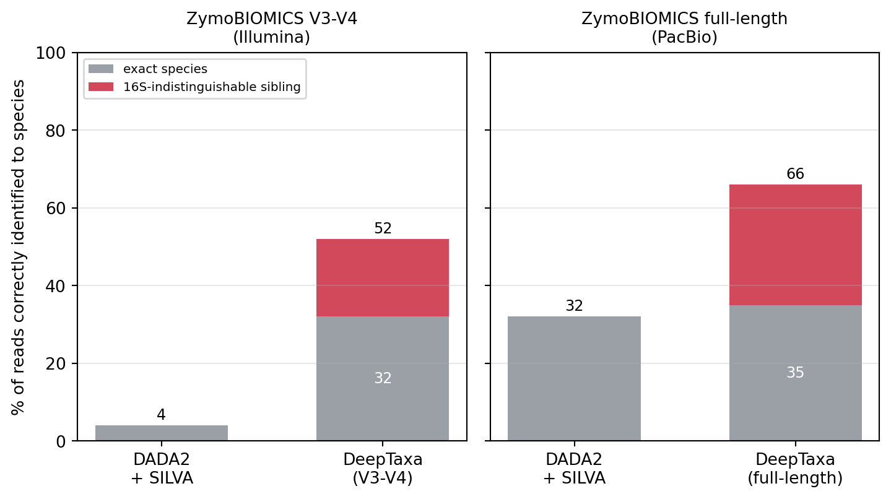

Validation Against Known Communities
Classifying 16S rRNA with DeepTaxa, and checking the result against a known composition
Objective. Check DeepTaxa on a mock community of known composition, comparing its genus- and species-level calls with a reference method across the V3-V4 and full-length 16S regions.
Prerequisites. DeepTaxa (pip install deeptaxa-rrna), Python 3.10 or later, and PyTorch 2.4 or later. The two companion notebooks run end to end on a free Colab GPU.
Inputs. ZymoBIOMICS mock-community reads (public SRA runs) and the matching DeepTaxa checkpoints. Outputs. Genus- and species-recovery comparisons against DADA2 with SILVA. Runtime. A few minutes per region on a GPU.
Last validated July 2026.
Taxonomic classification turns 16S reads into named organisms, the foundation of a microbiome study: which taxa are present, how abundant they are, and how communities differ between samples or conditions. Those conclusions are only as reliable as the names behind them, so before applying a classifier to study samples it is worth running it on a community whose composition is already known. Here DeepTaxa (Salah et al., 2026) is checked against the ZymoBIOMICS mock community, sequenced two ways: over the V3-V4 amplicon, the region most often used on Illumina platforms, and over the full-length 16S gene on PacBio, which resolves finer, species-level detail. Both are public ZymoBIOMICS runs in the Sequence Read Archive: the V3-V4 reads are run SRR35133066 and the full-length reads are run SRR38028391.
1 When to use this tutorial
Use this tutorial to check DeepTaxa on data whose composition is already known. It differs from the prediction tutorial, which classifies unknown sequences, and from the analysis tutorial, which studies model behavior in depth.
2 Required inputs
- Mock-community reads reduced to amplicon sequence variants (ASVs). Here the public ZymoBIOMICS runs above are used: V3-V4 on Illumina and full-length 16S on PacBio.
- The DeepTaxa checkpoint that matches the sequenced region (V3-V4 or full-length).
- The known ZymoBIOMICS composition: eight genera, each with an expected species.
- Optional: a DADA2 + SILVA taxonomy for the same ASVs, used here as a reference method.
3 Expected outputs
- Per-ASV DeepTaxa predictions from domain to species, with confidence scores.
- Genus-level recovery: whether each expected genus is found.
- Species-level recovery, split into exact matches, near-neighbor calls, unresolved reads, and incorrect calls.
- A DeepTaxa versus DADA2 + SILVA comparison (the figure below).
4 Runtime and hardware
Runtime observed during validation: a few minutes per region on an NVIDIA A40 GPU, and the two companion notebooks run end to end on a free Colab GPU. Runtime will vary with the number of ASVs, the checkpoint, and the hardware.
5 Validation design
A mock community is useful because its composition is known in advance, so recovery can be measured directly. Recovery is read at two levels. Genus-level recovery is the more stable target, because the 16S gene usually carries enough signal to separate genera. Species-level recovery is harder, because closely related species can share nearly identical 16S regions, so species-level results are interpreted with more care: an exact match and a near neighbor that 16S cannot distinguish are reported separately rather than lumped together.
6 Workflow overview
| Step | Purpose | Output |
|---|---|---|
| Prepare the mock-community ASVs | Match the inputs to the expected taxa and the region | FASTA and expected composition |
| Run DeepTaxa | Classify each ASV | Prediction table with confidence |
| Compare with the expected taxa | Measure recovery | Genus and species recovery |
| Compare with DADA2 + SILVA | Provide a conventional baseline | Method comparison |
| Interpret the results | Separate exact, near-neighbor, unresolved, and incorrect calls | Validation summary |
7 How each region is checked
The steps are the same for both regions: install DeepTaxa, download the checkpoint that matches the region, classify a set of amplicon sequence variants (ASVs), read the confidence scores, and compare the calls against the known composition. The core of a region is a single deeptaxa predict call, shown here for the V3-V4 ASVs; the notebooks run the full workflow, including the comparison and the name reconciliation below.
deeptaxa predict \
--fasta-file zymo_v3v4_asvs.fna \
--checkpoint deeptaxa-v3v4-v2.pt \
--tabular \
--output-dir predictions/- V3-V4 mock community classifies ASVs from the ZymoBIOMICS standard sequenced over V3-V4, and recovers all eight expected genera.
- Full-length mock community classifies full-length 16S ASVs from the same standard and looks closely at species-level assignment, where DeepTaxa differs most from an exact-matching reference method.
Each analysis runs in full on a free Colab GPU.
8 Results and how to read them
At the genus rank, both DeepTaxa and the reference method recovered all eight expected genera and agreed on the genus of essentially every read, so they are indistinguishable there. The reference method here is DADA2 (Callahan et al., 2016) with the SILVA v138 database (Quast et al., 2013), abbreviated DADA2 + SILVA: SILVA is the reference database, and DADA2 is the classifier, which uses a naive Bayes model for the genus and exact matching for the species.
The methods differ at the species rank, and the difference is not the same in the two regions. DADA2 + SILVA assigns a species only on an exact, unambiguous match. In this mock-community benchmark that gives the reference method very high precision, but it also leaves many reads unresolved at the species level: it otherwise stays at the genus, declining to name a species rather than naming one incorrectly. On the short V3-V4 region this caution is severe, and DeepTaxa resolves far more reads to an exact species than the reference does. On the full-length gene the two are close on exact matches, and DeepTaxa’s advantage there is coverage, not exactness.
That coverage is mostly close relatives that 16S cannot separate, such as the Bacillus subtilis group or Shigella for Escherichia coli, which the figure credits in red. None of DeepTaxa’s species calls on the expected mock organisms is an unrelated error; every such miss is a near neighbor of the correct species within the same genus. A few near neighbors are not credited, however: on some ASVs the reference resolves the true species, for example Salmonella enterica, which DeepTaxa labels Salmonella bongori, and these are counted as misses, so the figure does not reward DeepTaxa where the reference outperforms it. The net trade-off is that DeepTaxa commits to a species far more often than the reference, at the cost of being occasionally wrong by one near neighbor, while the reference abstains rather than committing. In practice, the genus-level profiles that most 16S analyses rest on are reliable here from either method, while species-level claims should be treated with the caution this comparison shows.
9 Interpreting species-level recovery
Score each species-level call in one of four categories, and report them separately rather than treating every non-exact call as an error:
| Category | Meaning | How to report |
|---|---|---|
| Exact match | Predicted species equals the expected species | Count as recovered |
| Near neighbor | Predicted species is a close relative that 16S cannot reliably distinguish | Report separately |
| Unresolved | No confident species-level call | Do not count as wrong without context |
| Incorrect | The call conflicts with the expected taxon and is not a close 16S relative | Count as an error |
10 Sanity checks
- The number of DeepTaxa predictions matches the number of input ASVs.
- All eight expected genera appear in the prediction table.
- The checkpoint matches the sequenced region.
- Confidence scores are present for the ranks being scored.
- Species-level calls are read together with their near-neighbor relationships, not in isolation.
- DeepTaxa and DADA2 + SILVA names are reconciled before scoring (see Troubleshooting).
11 Troubleshooting
If expected taxa are missing, confirm that the FASTA holds the right ASVs and that the checkpoint matches the sequenced region.
If many species calls look wrong, check the matching genus calls and the near-neighbor relationships first; some species mismatches reflect the limited resolution of the 16S region rather than a real failure.
If DeepTaxa and DADA2 + SILVA disagree on names, check for synonymy and database-version differences. DeepTaxa reports the GTDB names used by Greengenes2 (McDonald et al., 2024), which renames or splits several genera relative to the NCBI names on most reference materials; Lactobacillus fermentum, for instance, becomes Limosilactobacillus. Both notebooks include a short function that reconciles the names before scoring.
If the output is empty, confirm that the FASTA is valid, the sequence identifiers are unique, and the checkpoint loaded correctly.
12 Practical points
The most important choice is to match the checkpoint to the sequenced region. The paper (Salah et al., 2026) puts a figure on the cost of getting this wrong: applying the full-length checkpoint to V3-V4 reads lowers species accuracy from 92.96 percent to 60.7 percent, while a checkpoint trained on the V3-V4 window recovers most of the loss. Classify V3-V4 reads with the V3-V4 checkpoint, and full-length reads with the full-length checkpoint.
The confidence score is best read as a measure of how much information the input carries, not as a promise that the call is correct. In the published benchmark a high score corresponds to a strong chance of being correct. The score falls at the finer ranks, and on short or off-region reads, because the marker carries less information there. A low score is the model declining to commit, and filtering it out, for example below 0.5, is reasonable.
13 Summary
DeepTaxa recovers all eight expected genera in both regions, matching the reference method at the genus rank. At the species rank it commits far more often than an exact-matching reference, at the cost of occasional near-neighbor calls that 16S cannot separate. Report genus-level recovery as the stable result, and report species-level calls in the four categories above so the limits of 16S resolution are not overinterpreted.
15 Key references
This tutorial uses the DeepTaxa method (Salah et al., 2026) and the Greengenes 2 database (McDonald et al., 2024), and compares against DADA2 (Callahan et al., 2016) with SILVA (Quast et al., 2013). See the References page for the complete bibliography.